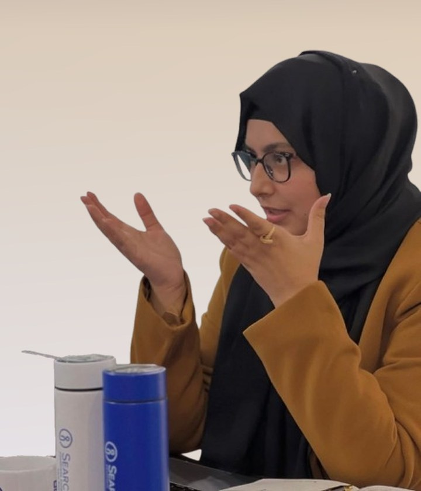

Anxiety & panic
- Anxiety disorders
- Panic attacks and panic disorder
- Worry, restlessness and tension
- Health-related anxiety
- Fear and avoidance patterns


Psychiatrist in Lahore · TYROX
PMDC Verified
Psychiatrist · Mental health · Lahore, Pakistan
Adult psychiatry · Strengthen Your Mind
Looking for a psychiatrist in Lahore? Dr. Aaliya Mirza provides confidential, patient-centered care for anxiety, depression, stress, burnout and related mental health concerns at TYROX.
About
Dr. Aaliya Mirza is a psychiatrist based in Lahore, Pakistan, focused on compassionate, confidential adult mental health care. Patients describe her approach as empathetic and clear — treatment plans are explained in plain language and tailored to individual needs.
Through her practice, Strengthen Your Mind, she aims to create a safe, non-judgmental space where people feel heard and valued. Care may include assessment, counselling support and ongoing follow-up for anxiety, depression, stress, burnout and related concerns.
She consults at TYROX Pharmacy & Polyclinic, LDA Avenue 1, Lahore, making specialist psychiatry accessible alongside the clinic’s broader consultant and pharmacy services. Remote sessions may also be arranged where clinically appropriate — confirm availability when you book.
Patients across Punjab
Patients looking for a psychiatrist in Lahore can consult Dr. Aaliya Mirza for assessment and management of common mental health conditions. Her practice also welcomes patients travelling from nearby cities across Punjab who prefer a discreet, specialist consultation in Lahore.
Whether you need support for anxiety or panic symptoms, low mood, work-related stress, sleep disruption linked to mental health, or a confidential adult psychiatry review, Dr. Aaliya Mirza provides careful evaluation and individualized next steps.
Clinical focus
Clinic hours
Common questions
Dr. Aaliya Mirza is a psychiatrist in Lahore at TYROX Pharmacy & Polyclinic, LDA Avenue 1. She provides confidential adult mental health care for anxiety, depression, stress, burnout and related concerns.
Consider a consultation if anxiety, low mood, panic symptoms, stress or sleep-related distress is affecting your daily life, work, studies or relationships — or if symptoms are getting harder to manage alone.
Yes. Psychiatry visits are handled privately. Dr. Aaliya Mirza aims to provide a safe, non-judgmental environment where patients feel heard and respected.
Remote sessions may be offered where clinically appropriate. Ask about availability when you book your appointment.
Call or WhatsApp 0339-4833676, or use the Book consultation button on this page. Visits are at TYROX Pharmacy & Polyclinic, 1066 D Block, LDA Avenue 1, Lahore.
Appointments
If you are struggling with anxiety, low mood, panic symptoms, stress or burnout, a specialist psychiatry assessment can help clarify what is going on and outline a clear plan for care.
TYROX Pharmacy & Polyclinic · 1066, D Block, LDA Avenue 1, Lahore